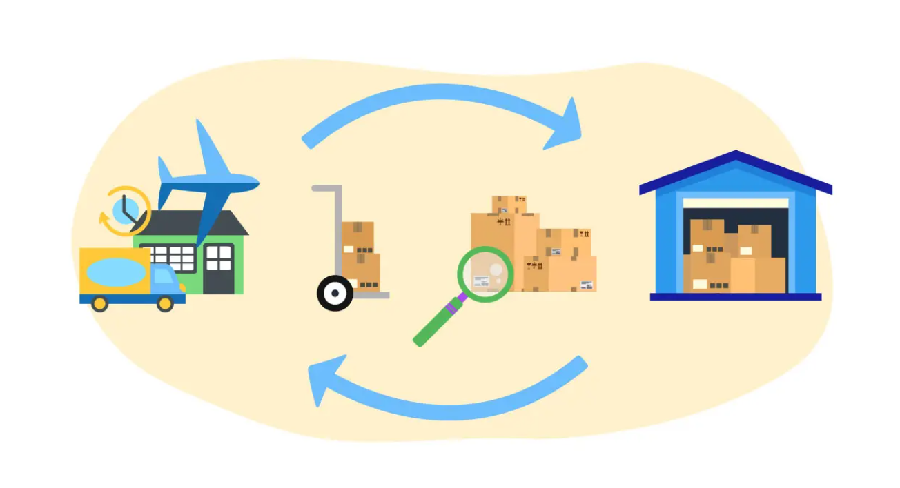

Screenshots



This module enhances Odoo stock operations by automatically creating a return transfer when a user receives less quantity than expected and chooses No Backorder.
Instead of leaving remaining quantities stuck in the Transit Location, the system will automatically generate a return transfer back to the original source location.
For support or customization requests, please contact the author via Odoo Apps or GitHub.